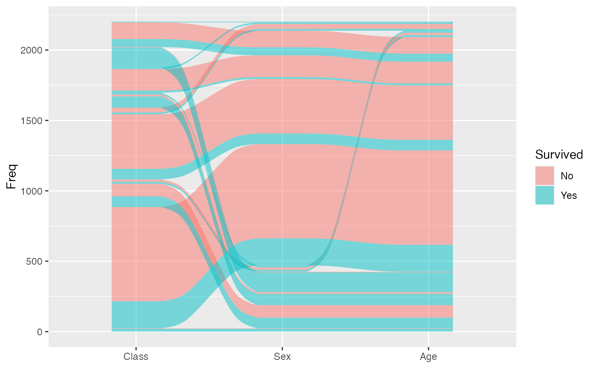
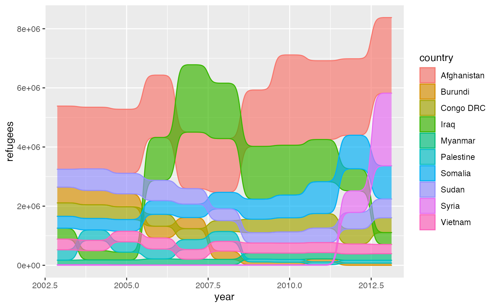
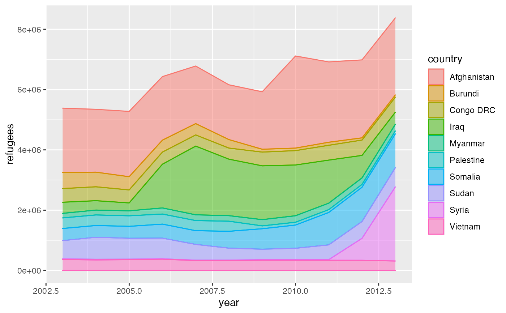
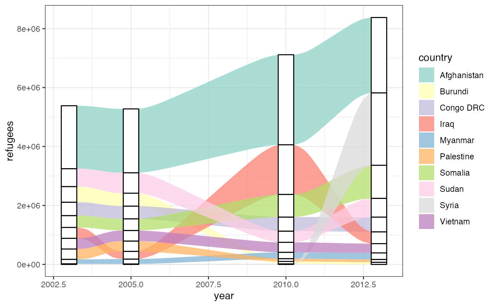
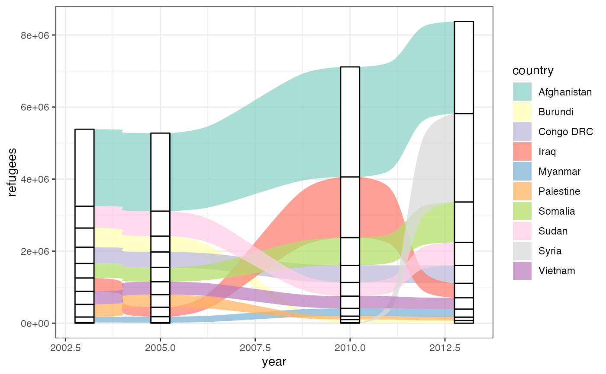
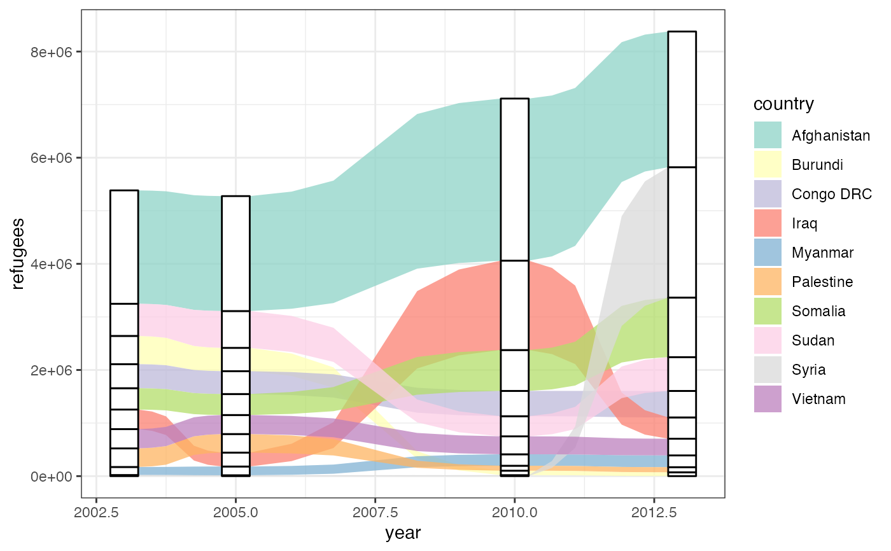

geom_alluvium receives a dataset of the horizontal (x) and
vertical (y, ymin, ymax) positions of the lodes
of an alluvial plot, the intersections of the alluvia with the strata.
It plots both the lodes themselves, using geom_lode(), and the
flows between them, using geom_flow().
geom_alluvium( mapping = NULL, data = NULL, stat = "alluvium", position = "identity", width = 1/3, knot.pos = 1/4, knot.prop = TRUE, curve = "xspline", reach = NULL, segments = NULL, na.rm = FALSE, show.legend = NA, inherit.aes = TRUE, ... )
| mapping | Set of aesthetic mappings created by |
|---|---|
| data | The data to be displayed in this layer. There are three options: If A A |
| stat | The statistical transformation to use on the data; override the default. |
| position | Position adjustment, either as a string, or the result of a call to a position adjustment function. |
| width | Numeric; the width of each stratum, as a proportion of the distance between axes. Defaults to 1/3. |
| knot.pos | The horizontal distance of x-spline knots from each stratum
( |
| knot.prop | Logical; whether to interpret |
| curve | Character; the type of curve used to produce flows. Defaults to
|
| reach | For alternative |
| segments | The number of segments to be used in drawing each alternative curve (each curved boundary of each flow). If less than 3, will be silently changed to 3. |
| na.rm | Logical:
if |
| show.legend | logical. Should this layer be included in the legends?
|
| inherit.aes | If |
| ... | Additional arguments passed to |
geom_alluvium, geom_flow, geom_lode, and geom_stratum understand the
following aesthetics (required aesthetics are in bold):
x
y
ymin
ymax
alpha
colour
fill
linetype
size
group
group is used internally; arguments are ignored.
By default, geom_alluvium() and geom_flow() render flows between lodes as
splines about quartets of control points using grid::xsplineGrob(). These
curves are parameterized by the relative location of the knot (knot.pos)
that governs the bending of each end toward their meeting at the point of
inflection. They are quick to render and clear to read. Nevertheless, for any
number of reasons, users may prefer plots that use differently-shaped curves.
A variety of such options are illustrated in this blog post by Jeffrey Shaffer. A subset of these,
some with added flexibility, are implemented here. Each is encoded as a
continuous, increasing, bijective function from the unit interval \([0,1]\)
to itself, and each is rescaled, if necessary, so that its endpoints meet the
corresponding lodes. They are rendered piecewise-linearly, by default using
segments = 48. Summon each curve type by passing one of the following
strings to curve:
"linear": \(f(x)=x\), the unique degree-1 polynomial that takes
0 to 0 and 1 to 1
"cubic": \(f(x)=3x^{2}-2x^{3}\), the unique
degree-3 polynomial that also is flat at both endpoints
"quintic": \(f(x)=10x^{3}-15x^{4}+6x^{5}\),
the unique degree-5 polynomial that also has zero curvature
at both endpoints
"sine": the unique sinusoidal function that is flat at both
endpoints
"arctangent": the inverse tangent function, scaled and re-centered to the
unit interval from a symmetric domain with radius reach
"sigmoid": the sigmoid function, scaled and re-centered to the unit
interval from a symmetric domain with radius reach
Only the (default) "xspline" option uses the knot.* parameters, while
only the alternative curves use the segments parameter, and only
"arctangent" and "sigmoid" use the reach parameter. Larger values of
reach result in greater compression and steeper slopes. The NULL default
will be changed to 2+sqrt(3) for "arctangent" and to 6 for "sigmoid".
The previously defunct parameters axis_width and ribbon_bend have been
discontinued. Use width and knot.pos instead.
ggplot2::layer() for additional arguments and
stat_alluvium() and
stat_flow() for the corresponding stats.
Other alluvial geom layers:
geom_flow(),
geom_lode(),
geom_stratum()
# basic ggplot(as.data.frame(Titanic), aes(y = Freq, axis1 = Class, axis2 = Sex, axis3 = Age, fill = Survived)) + geom_alluvium() + scale_x_discrete(limits = c("Class", "Sex", "Age"))gg <- ggplot(alluvial::Refugees, aes(y = refugees, x = year, alluvium = country)) # time series bump chart (quintic flows) gg + geom_alluvium(aes(fill = country, colour = country), width = 1/4, alpha = 2/3, decreasing = FALSE, curve = "quintic")# time series line plot of refugees data, sorted by country gg + geom_alluvium(aes(fill = country, colour = country), decreasing = NA, width = 0, knot.pos = 0)# irregular spacing between axes of a continuous variable refugees_sub <- subset(alluvial::Refugees, year %in% c(2003, 2005, 2010, 2013)) gg <- ggplot(data = refugees_sub, aes(x = year, y = refugees, alluvium = country)) + theme_bw() + scale_fill_brewer(type = "qual", palette = "Set3") # proportional knot positioning (default) gg + geom_alluvium(aes(fill = country), alpha = .75, decreasing = FALSE, width = 1/2) + geom_stratum(aes(stratum = country), decreasing = FALSE, width = 1/2)# constant knot positioning gg + geom_alluvium(aes(fill = country), alpha = .75, decreasing = FALSE, width = 1/2, knot.pos = 1, knot.prop = FALSE) + geom_stratum(aes(stratum = country), decreasing = FALSE, width = 1/2)# coarsely-segmented curves gg + geom_alluvium(aes(fill = country), alpha = .75, decreasing = FALSE, width = 1/2, curve = "arctan", segments = 6) + geom_stratum(aes(stratum = country), decreasing = FALSE, width = 1/2)